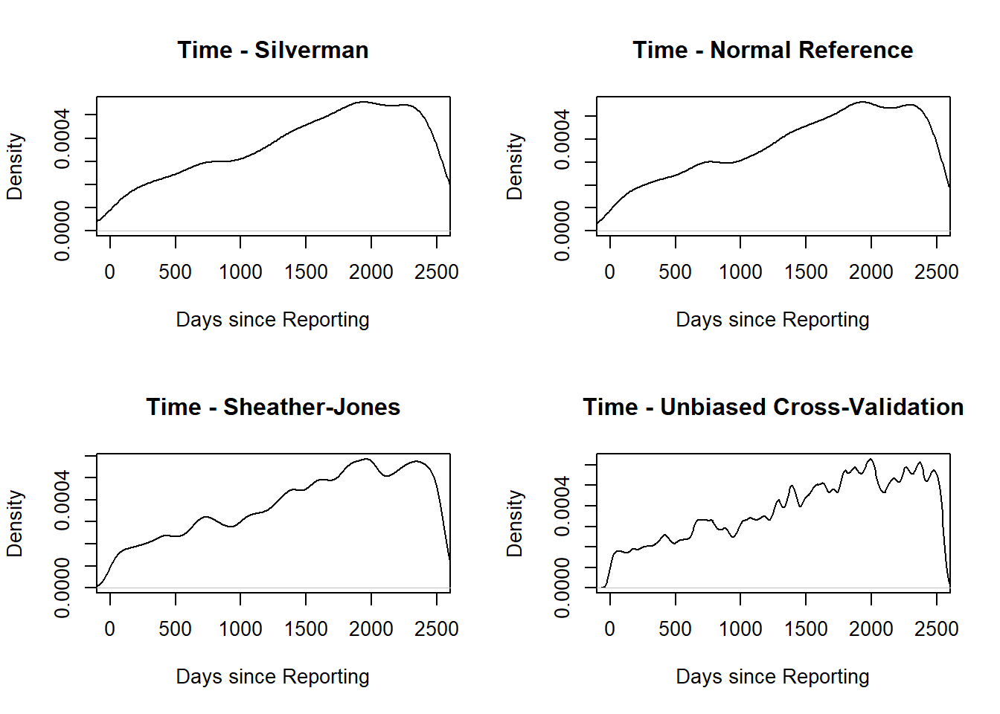

This isn’t America’s first opioid epidemic, nor is this the first time opioids have been widely available as medicine. Hypodermic needles provided immediate pain relief to an unprecedented number of casualties after the Civil War. By 1911, one in 400 US citizens were addicted to some form of opium. Opiate deaths reached epidemic proportions again in the 1950s.
The CDC considers the current opioid epidemic, or the third opioid epidemic, a combination of three epidemics distinguished by the types of opioids associated with mortality.
- 1990s - 2010: Prescription painkillers
- 2010 - present: Heroin
- 2013 - present: Synthetic opioids
My goal in this article is to learn more about the crisis and find out how the crisis is getting worse. With the lack of real-time data available, we are forced to look at older datasets. These datasets, however, can tell us a lot about the scope and intensity of the epidemic currently. In this article, I will be using data from Accidental Drug Related Deaths from 2012-2018 in Connecticut.
Why am I looking at Connecticut? Before 2012, Opioid overdose deaths hit Connecticut similarly to the rest of the nation. From 2012 to 2016, the opioid death rate in Connecticut quadrupled from 5.7 to 24.5 per 100,000. In 2017, data placed Connecticut among the top ten states highest in opium-related death rates (30.9 per 100 000). However, a study done by Green et al, looking at state data from 1999 to 2007 showed a greater increasing mortality from opioid analgesics. Given the timing, the severity of the crisis, and the increased mortality from synthetic opioids, I figured that the data from Connecticut would provide insight on the national crisis.
My motivation: I recently took a class on nonparametric statistics and wanted to practice/retain these tools so that I could better explore data. Nonparametric methods can be used to help model-fitting and can provide valid findings without assuming parametric data, or data that comes from a known distribution.
Cleaning the Data
The dataset provided contains date and time in one column. Using the lubridate package, I created separate Year, Month, and Day columns. I also created a “Number of Days” column, which counted the total number of days since the data was recorded. I created this column to act as an index so that I could easily analyze the density of deaths and covariates over time.
The dataset also contained information for the Longitude, Latitude, and Address of Death in one column. I used the extract function from the dplyr package to create columns for Longitude and Latitude information.
Investigation
Let’s look at the distribution of deaths over time using nonparametric density estimation.
Kernel density estimates rely heavily on the value of the smoothing parameter. Thus, a useful density estimation procedure needs a reliable method of determining the best bandwidth to use for a given set of data.
Instead of choosing the smoothing parameter subjectively, we will look at several automated smoothing parameter selection procedures.
nrd: Normal Reference - Scott(1992)
nrd0: Silverman’s Rule of Thumb - Silverman(1986)
SJ: Sheather-Jones - 1991
ucv: Unbiased Cross-validation
The Normal Reference procedure assumes that the general features of the density follow a Normal distribution. The accuracy of a Kernel Density estimator is measured by the Asymptotic Mean Integral of Squared Errors (AIMSE). The AIMSE of a kernel estimator, when bandwidth \(h\) is minimized, depends on an unknown density. Mathematically, the minimized bandwidth quantity is related to density by a real-valued quantity \(R_2\). In relating a “reference distribution” to the unknown density, we can replace \(R_2\) by its value for the reference distribution. When the density is assumed to be normal, we need to only estimate \(\sigma\) using the standard deviation or IQR.
This approach leads to a value of the smoothing parameter that is easily calculated and works well for smooth distributions such as Normal. For reference, the minimized bandwidth is found by
\[h^* = \Big(\frac{1}{2\sqrt{\pi}R_2}\Big)^\frac{1}{5}\frac{1}{n^\frac{1}{5}}\]
where the Gaussian kernel is used and
\[R_2 = \displaystyle\int_{-\infty}^{\infty}p''(y)^2dy \sim 1.059\frac{\sigma}{n^\frac{1}{5}}\]
The optimal bandwidth is a function of the integrated squared second derivative. The constant, \(1.059\), simply comes from using a Gaussian Kernel and assuming the density follows a Normal distribution. In many cases, however, the constant is too wide for other distributions. The Rule of Thumb method reduces the constant used the selection procedure to \(0.9\). Silverman chooses this value to avoid losing efficiency on Integrated Mean Squared error at the normal.
Another approach is to use a plug-in method. In a plug-in method, the bias of an estimate \(\hat g\) is written as a function of an unknown \(g\) and approximated through Taylor series expansions. A preliminary estimate is used to derivate an estimate of the bias (also known as the Integrated mean squared error). The Sheather-Jones method follows the plug-in approach, instead choosing a pilot estimate that best estimates the second derivative of the density function, rather than the density function itself. Sheather-Jones seems to work very well on a broad set of cases, as opposed to the Normal Reference procedure.
The methods described so far are based on the approximation to the integrated mean squared error given by the AIMSE. If the AIMSE is not an accurate approximation to the integrated mean squared error, then the smoothing parameter selected by these methods may not work well, even if \(R_2\) is accurately estimated using either a reference distribution or a preliminary estimator. The last approach used, Cross-validation, is based on the idea of estimating the IMSE directly, without relying on the AIMSE. This is done by minimizing the objective function
\[\int_{-\infty}^{\infty}\hat p(y; h)^2dy - \frac{2}{n}\displaystyle \sum_{i=1}^{n}\hat p_{-i}(Y_i; h)\]
where \(p_{-i}\) denotes the kernel density estimator based on all data points except \(Y_i\).
This idea applies to a wide range of methods, including multivariate density estimation and kernel estimation of a regression function. However, it is known to be more likely to result in poor choices. This is possibly because the method requires numerical minimization of an objective function, which can be a challenging computational problem depending on the shape of the objective function. A more complex objective function can cause overfitting.

Regardless of bandwidth selectors, each density estimate indicated a rise in deaths per day from 2012-2018.
The following table shows the proportion of drug overdoses that involved Fentanyl and year.
| Year | Proportion of Deaths |
|---|---|
| 2012 | 0.04 |
| 2013 | 0.07 |
| 2014 | 0.13 |
| 2015 | 0.26 |
| 2016 | 0.53 |
| 2017 | 0.65 |
| 2018 | 0.75 |
43.64% of deaths over the six-year study were related to Fentanyl deaths. This is an astounding percentage, given that before 2015, three years into the study, Fentanyl was found in less than 30% of deaths. Nearly 74.6% of those who died in 2018 had Fentanyl in their body.
If plotted by year, the table would appear to follow logistic growth. We can test this claim by model-checking using nonparametric regression. We can run a nonparametric regression and test whether a linear model fits the data. This can be done by comparing the sum of squared errors. If the linear model fits the data, we expect that \(SSE_{linear} = SSE_{nonparametric}\). Another expression of this is
\[\displaystyle\sum_{i=1}^{n} e_j^2 = \displaystyle\sum_{i=1}^{n}(Y_i - \hat m(X_i))^2\]
where \(\hat m(X_i)\) is the local-linear kernel estimator of \(m(\cdot)\). Simply put, the residuals between both models should be the same. This implies that the square of the linear model’s residuals is close to zero. Additionally, we can measure the model’s goodness-of-fit by finding the ratio of the linear model’s SSE to the nonparametric model’s SSE. sm.regression features of an argument model = linear, which tests the hypothesis that a linear function explains the relationship between the variables.
Unfortunately, there’s not much data to back up our claims of nonlinear growth. Let’s change the time parameter from Years to Months for more data points. Let’s also look at the number of deaths over time.
## Test of linear model: significance = 0## Test of linear model: significance = 0
| Proportion of Deaths | Number of Deaths(Monthly) | ||||||||
|---|---|---|---|---|---|---|---|---|---|
|
|
The small p-value suggests that the hypothesis that the linear relationship is appropriate is rejected; that is, the relationship between the proportion of drug-related deaths involving Fentanyl and time is not linear.
Transforming Nonlinear Data
Let’s look at the growth of Fentanyl Deaths by Number of Deaths. We know that the relationship between Time and Fentanyl Deaths is not linear. The nonparametric estimate seems to follow a sigmoidal curve. However, It doesn’t seem like we’re seeing the deaths hit an asymptote. The number of deaths becomes more disperse during the 60th - 80th months (2017 - 2018).
Fentanyl deaths may follow exponential growth. Let’s test whether this is true or not. A multiplicative model, like an exponential one, corresponds to an additive model on the log scale. This means that we can verify that the data is exponentiated if time follows a linear relationship with the logarithm of deaths.
This will also allow us to use linear regression tools to predict the trajectory of Fentanyl deaths.
Let’s try plotting Time and Fentanyl Deaths, using the logarithm of Fentanyl Deaths.
logx <- log(fentrate.ym.ful$x)
fentrate.ym.ful$logx <- logx
head(fentrate.ym.ful)## m_y x ind logx
## 1 2012-01 0 1 -Inf
## 2 2012-02 1 2 0.00
## 3 2012-03 1 3 0.00
## 4 2012-04 1 4 0.00
## 5 2012-05 1 5 0.00
## 6 2012-06 2 6 0.69We’ve run into some trouble - we can’t take the log of zero. Let’s just add every entry in the number of deaths column by 1.
## m_y x ind logx
## 1 2012-01 0 1 0.00
## 2 2012-02 1 2 0.69
## 3 2012-03 1 3 0.69
## 4 2012-04 1 4 0.69
## 5 2012-05 1 5 0.69
## 6 2012-06 2 6 1.10Great - now, let’s see how that turned out.
np.fent.full.log <- sm.regression(ind, logx, data=fentrate.ym.ful, col="green", pch=19, xlab = "Number of Months", ylab = "Log Deaths", model="linear")## Test of linear model: significance = 0We can rule out that Deaths over Time follows exponential growth. A log transformation linearizes exponential data. We don’t have a linear relationship between the Log of Deaths and the number of months. In fact, the log-deaths model suggests that the growth in the number of deaths is slowing down.
So what do we do?
Modeling Logistic Growth
We know that the growth of deaths is partially exponential. A good part of the log deaths model is linear. We also know that the growth rate of deaths slowed down after 2017.
Remember how our nonparametric estimate followed a sigmoidal curve? I do too. A sigmoid function follows the same partial exponential growth and decreasing growth rate we see in our data. A common sigmoid function is the logistic function.
The logistic growth model can be written as
\[P = \frac{K}{1 + e^{P_o + rt}}\]
where
\(P\): population size (y)
\(t\): time (x)
\(P_o\): initial population size
\(r\): growth rate
\(K\): final population size.
In our case, the population size is the number of deaths.
A logistic growth model can be implemented in R using nls, a non-linear least squares function. Unlike traditional OLS, non-linear least squares need initial starting parameters. The function iteratively evaluates model parameters and selects parameters that minimize model error. Without initial parameters, the function can’t compare the model to other parameters.
Finding good starting values is very important in nonlinear regression. If starting parameter values are outside of the range of potential parameter values, the algorithm will either fail or return something that doesn’t make sense.
The best way to find correct starting values is to “eyeball” the data, or plot the data and find an approximate asymptote, inflection point and slope.
This step can be bypassed by using self-starting functions with SSlogis. This function creates an initial estimate of the parameters, which are then plugged into the nonlinear least squares function to find the best-fit logistic equation.
The SSlogis function fits a slightly different parameterization of the logistic function
\[P = \frac{Asym}{1 + e^{\frac{xmid-t}{scal}}}\]
where \(Asym = K, xmid = \frac{-P_o}{r}, scal = \frac{-1}{r}\).
However, everything means the same thing. \(Asym\) is where the number of deaths plateau, \(xmid\) is the x value at the inflection point of the logistic curve and \(scal\) is how quickly the number of deaths approaches the asymptote.
##
## Formula: x ~ SSlogis(ind, Asym, xmid, scal)
##
## Parameters:
## Estimate Std. Error t value Pr(>|t|)
## Asym 66.785 2.883 23.17 < 0.0000000000000002 ***
## xmid 51.719 1.318 39.25 < 0.0000000000000002 ***
## scal 8.546 0.984 8.68 0.00000000000033 ***
## ---
## Signif. codes: 0 '***' 0.001 '**' 0.01 '*' 0.05 '.' 0.1 ' ' 1
##
## Residual standard error: 7.2 on 81 degrees of freedom
##
## Number of iterations to convergence: 2
## Achieved convergence tolerance: 0.00000212I don’t think that’s a bad fit. The curve suggests that deaths should level out at around 65-70 per month.
Let’s look at the residuals:
##
## ------
## Shapiro-Wilk normality test
##
## data: stdres
## W = 1, p-value = 0.05
##
##
## ------##
## Runs Test
##
## data: as.factor(run)
## Standard Normal = -1, p-value = 0.2
## alternative hypothesis: two.sidedThe errors are normally distributed. That’s good, but does this model make sense?
Let’s try to fit a logistic function on the proportion of deaths over time.
##
## Formula: prop ~ SSlogis(ind, Asym, xmid, scal)
##
## Parameters:
## Estimate Std. Error t value Pr(>|t|)
## Asym 0.8275 0.0388 21.3 <0.0000000000000002 ***
## xmid 50.6975 1.6864 30.1 <0.0000000000000002 ***
## scal 11.8108 1.0914 10.8 <0.0000000000000002 ***
## ---
## Signif. codes: 0 '***' 0.001 '**' 0.01 '*' 0.05 '.' 0.1 ' ' 1
##
## Residual standard error: 0.071 on 81 degrees of freedom
##
## Number of iterations to convergence: 0
## Achieved convergence tolerance: 0.00000268##
## ------
## Shapiro-Wilk normality test
##
## data: stdres
## W = 1, p-value = 0.3
##
##
## ------##
## Runs Test
##
## data: as.factor(run)
## Standard Normal = -1, p-value = 0.3
## alternative hypothesis: two.sidedThis model isn’t a bad fit either - the errors are also normally distributed. The model suggests that Fentanyl will account for around 80-85% of drug-related deaths. This is a huge percentage - nearly 9 out of 10 drug overdoses involve Fentanyl.
For clarity’s sake, let’s summarize what we know so far:
Drug overdose rates have steadily increased since 2012 - more people are dying from drugs.
In 2012, Fentanyl was involved in less than 10% of drug overdoses. In 2018, Fentanyl was involved in more than 80% of drug overdoses.
The number of drug-related deaths related to Fentanyl and the proportion of drug-related deaths related to Fentanyl both follow a logistic curve over time.
So what do those curves mean anyway? The asymptote for the number of deaths could suggest that the population that uses Fentanyl is at its maximum. Given that Fentanyl is attributed to most drug deaths, one could expect that Fentanyl is being used or cut with other drugs. Keep in mind that the heroin epidemic and the synthetic opioid epidemic are happening concurrently. As of now, we can’t say much. If anything, we have more questions:
Are Fentanyl deaths correlated with Heroin deaths or other drug deaths? Is it taken by older people, who may have other comorbidities? How often is Fentanyl taken alone?
We didn’t do much Exploratory Data Analysis at all, so let’s revisit these graphs after we explore the data a bit more. If you have the time, check out my second article where I try to answer some of those questions using barplots, heat maps, and other data visualization techniques.